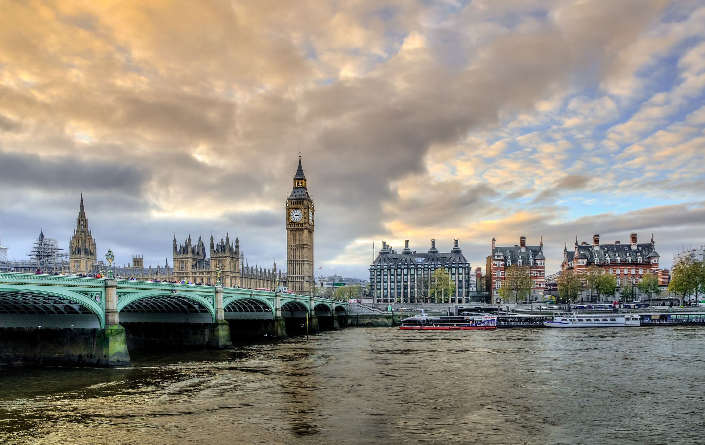

L'Espagne
En route pour l’Espagne, un territoire de culture et de soleil pour un été entre ami inoubliable ! Un conseil est d'explorer l’univers magique des plus beaux parcs d’attractions espagnols tel que port Aventura. Puis partir à la découverte des villes emblématiques du pays comme Barcelone ou la capitale Madrid et sans oublier l'andalousie. Entre parcs, visites, plages et farniente, cela ne peut etre qu'un bon sejour!
Le Portugal
Le Portugal est une destination qui ressemble assez a l'espagne car ils sont assez proche mais il reste assez différent. Ces villes les plus connues sont interessantes à visiter tel que Porto. Un été au protugal est très chaud alors prévoyer un stock de crème solaire mais étonamment un bain dans l'océan est très froid et ne depasse pas les 15°C donc un assez gros constraste avec la plage à 40°C ou a notre chaude meditérannée que l'on trouve également en espagne. La nourriture de ce pays ressemble un peu a la France et reste bonne ce qui est un plus par rapport a d'autres pays..jpg)
La Norvège
La Norvège est un pays pour les personnes qui aiment les basses températures, que ce soit en été ou en hiver il fait assez froid. La capitale Oslo est un incontournable a visiter avec une majorité de voiture électrique et beaucoup de verdure et de couleur on se sent bien avec de l'air frai alors que l'on est en ville. Puis en dehors de la ville des randonnées exeptionnelles sont présentes tel que le rocher de Preikestolen en été comme en hiver. D'autre villes telles que Stavenger sont typique et rappelle l'univers et l'histoire viking du pays, un restaurant viking ou l'on peut retrouver des viandes et poissons tel que de la baleines est indispensable à essayer. En revanche c'est un pays assez cher où les prix seront superieur à ceux de France.
L'Italie
L'Italie, un classique des destination de voyage pour un francais, avec sa forte proximité il est possible de s'y rendre voiture ou même en moto en passant par les cols. C'est un pays avec de forte tradition en terme de nourriture, comme il est connu, si il y a un endroit pour manger des pates ou des pizzas de qualité c'est bel et bien ce pays. De plus les paysages reste beau par exemple en visitant les 5 terres. Il est également bien de visiter Venise, une ville en majorité sur l'eau où l'on se déplace en gondole ce qui est assez spécifique à ce pays et cette ville.L'Irlande
L'irlande est un pays interessant a visiter pour ses tradition et cultures. La majorité des décorations sont vertes ppur rappeler le fameux trèfle qui représente le pays et le soir en ville il n'est pas étonnant d'entendre de la musique typique jouée a la cornemuse par des irlandais en kilt fan de bierre. Un classqiue pour les amateurs de bière est la visite de l'usine Guiness ou la fabrication de la bière est expliquée ainsi que l'histoire de l'entreprise et du Guiness Book des records. Fidèle à la fameuse musique de Michel Sardou, Les Lacs du Connemara sont aussi un classique à aller voir. Au niveau de la météo, tous les matin vous serez dans la brume qui partira en fin de matinée pour laisser place à un beau soleil le reste de la journée